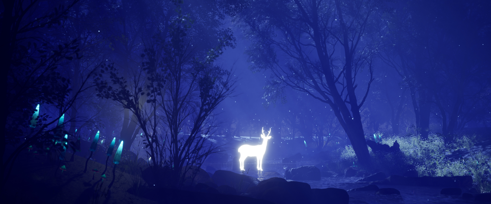
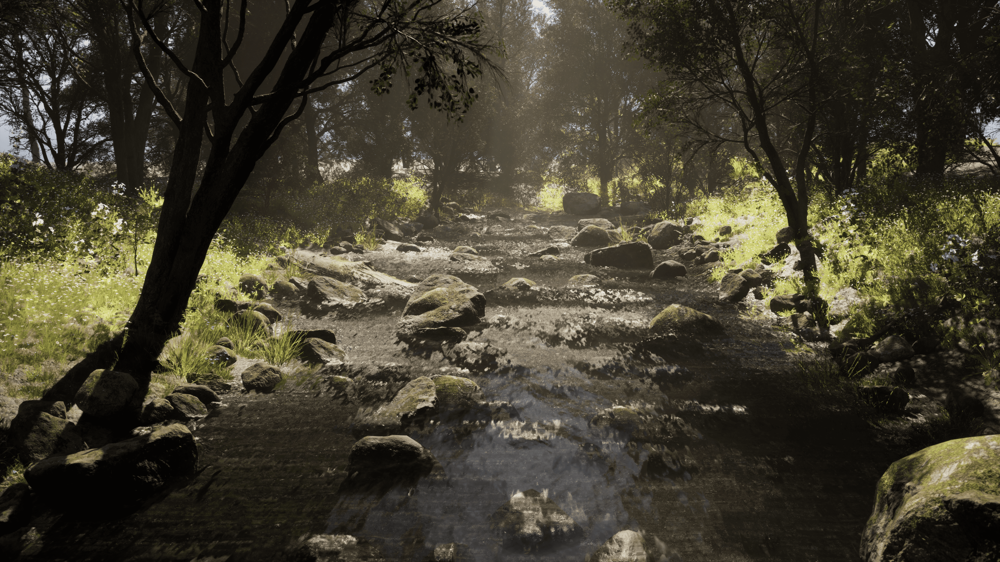
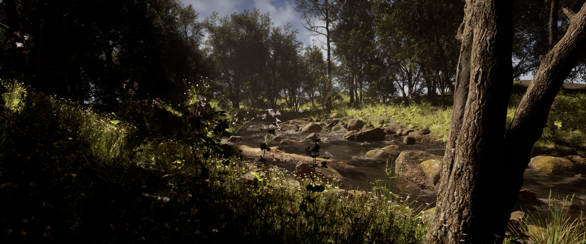
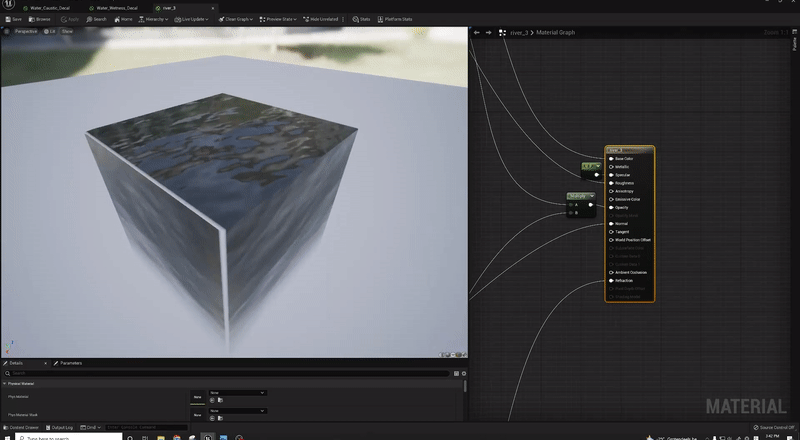
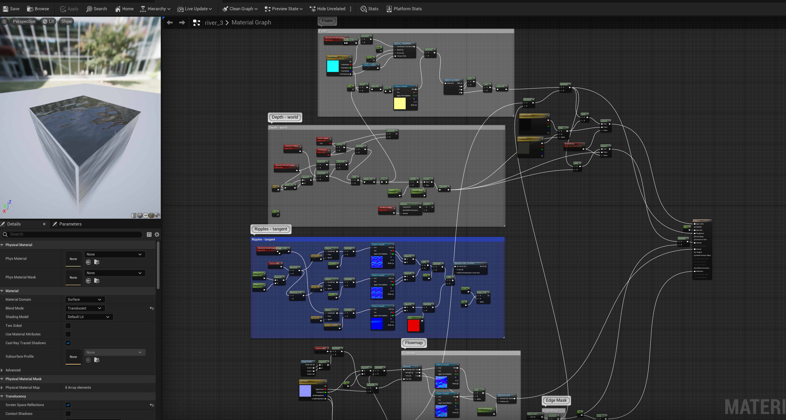
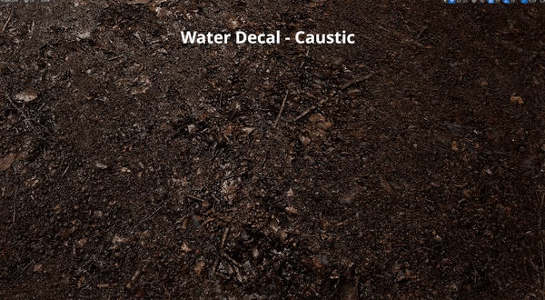
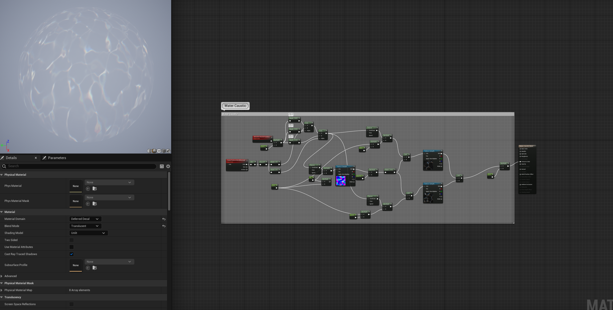
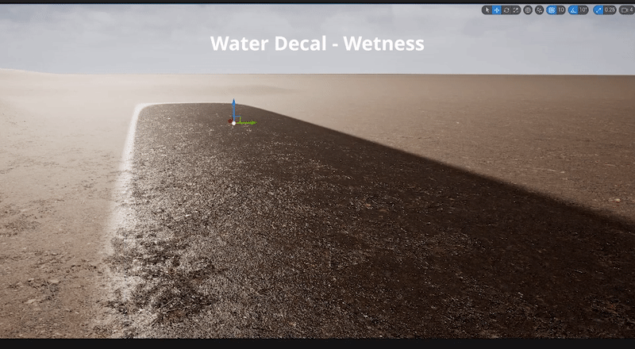
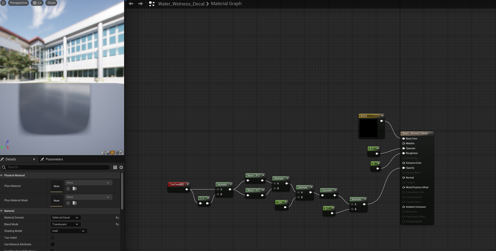

A moody atmospheric forest with custom water decal shaders
A cinematic forest environment focused on atmospheric lighting, volumetric fog, and natural asset composition — built in both day and night variations. The project also features custom water decal shaders for caustic light patterns and surface wetness, bringing technical depth to the environmental storytelling.
* Received professional feedback from Gerardo Contreras (Surface and LRC Artist)
Night Environment


Day Environment


Custom Water Decal Shaders
Developed custom water decal shaders to add realism and technical depth to the scene: a water shader for realistic surface rendering, a caustic light pattern simulating light refraction through water, and a surface wetness decal for organic wet-surface variation on rocks and ground.
Water


Caustic


Wetness

